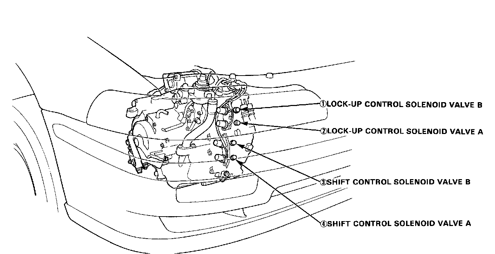
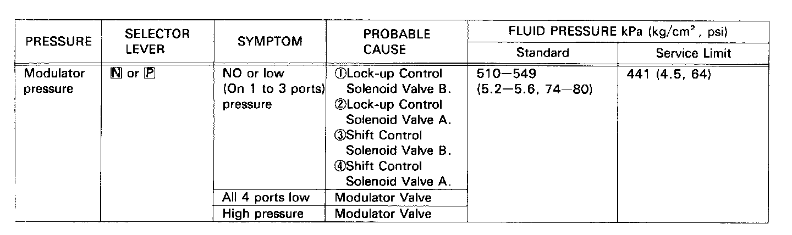

Solenoid Valve Pressure Test


Solenoid valve Pressure test
- Set the parking brake securely.
- Start the engine and run in at 2,000 rpm.
- Measure pressure at each of the 4 ports shown below.
NOTE: Before testing, be sure that the line pressure is held within the specified limits.